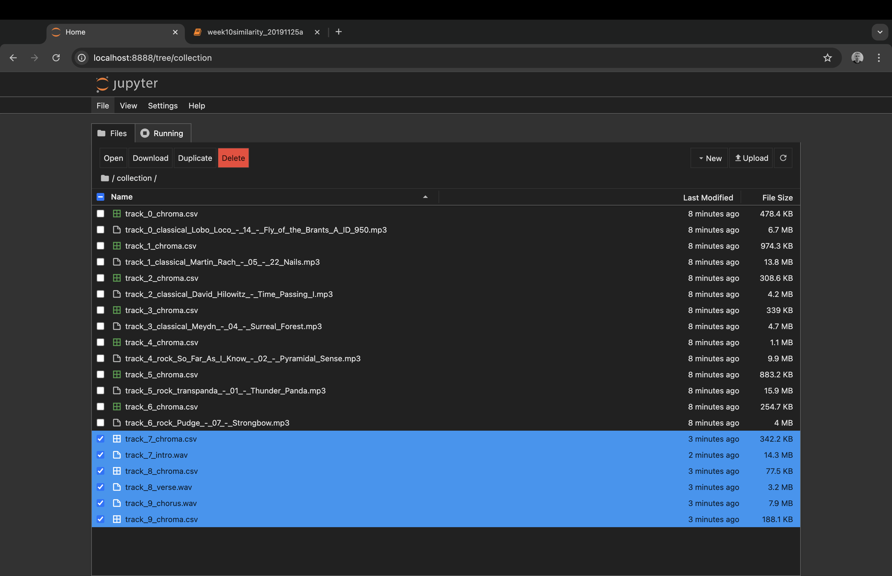
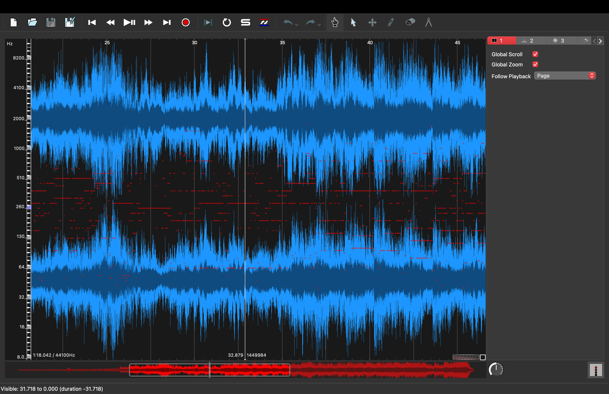

Music Analytic’s
For this weeks lab, I have opened the python notebook template from the moodle. I have uploaded the collection from the moodle to the python notebook. I have replaced the country tracks with the same tracks I used for last weeks lab. I have extracted the chroma features in sonic visualiser and exported the features as CSV files which I have replaced in the relevant area within the collection folder. See picture:

I used the python notebook template to generate a similarity matrix. My files which replaced the country tracks are labelled 7, 8 and 9. Follow this link for the html output:
SimilarityMatrixFor task 2 of this lab, I exported my peice of music from week 2 in MuseScore. I exported this as a WAV file and as an image file. However, it split the images into multiple files rather than one holistic file. For ease I will only upload 2 pages to compare with the midi images. I used sonic visualiser to open the wav file and did a polyphonic transcription of the peice and exported this as a midi file to be opened in MuseScore again. Here is the process:
Polyphonic Transcription

Wav File
Images Original

Images Midi


The transcription resulted in lots of data being lost, added, replaced, scrambled or reordered. Upon playing the midi file in MuseScore it was just a mish mash of scrambled notes. Notation was placed at the incorrect octave. Accidentals and dynamics were misplaced. Transcribing polyphonic music accurately requires significant computational power because it involves analyzing multiple frequencies simultaneously. This can be challenging for real-time applications. The accuracy decreases with the complexity of the music. Dense musical arrangements with overlapping sounds can confuse transcription algorithms, leading to errors in pitch detection, timing, and note duration. Dynamic Range is something that was affected. Instruments with wide dynamic ranges (like the piano) can cause issues where soft notes are missed or loud notes overshadow others. High quality polyphonic transcription software can be very expensive.
BackToWeek9Lab